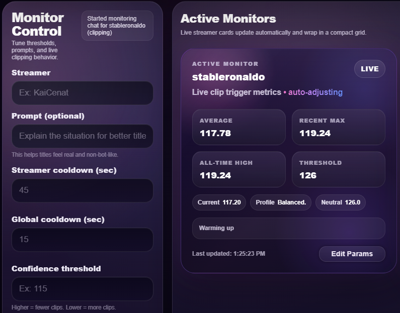
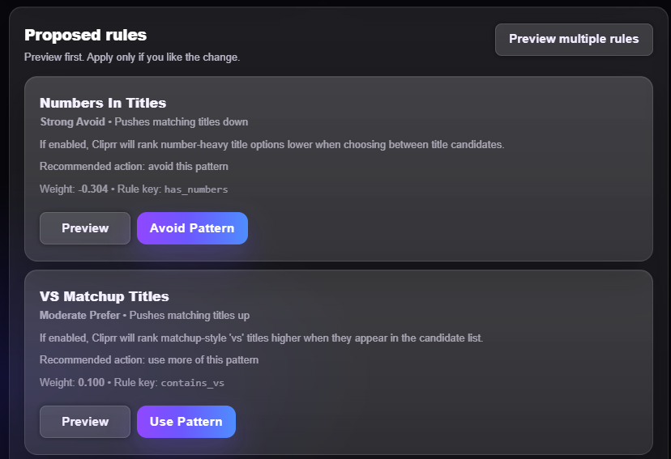
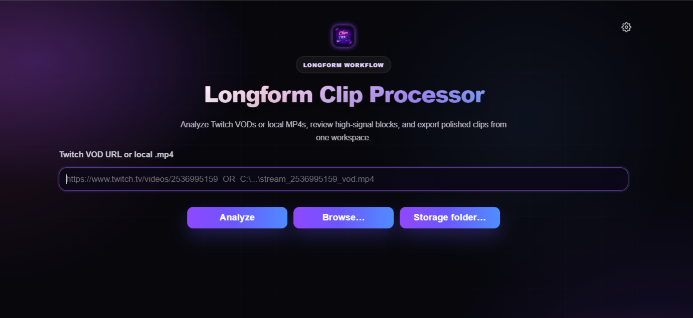
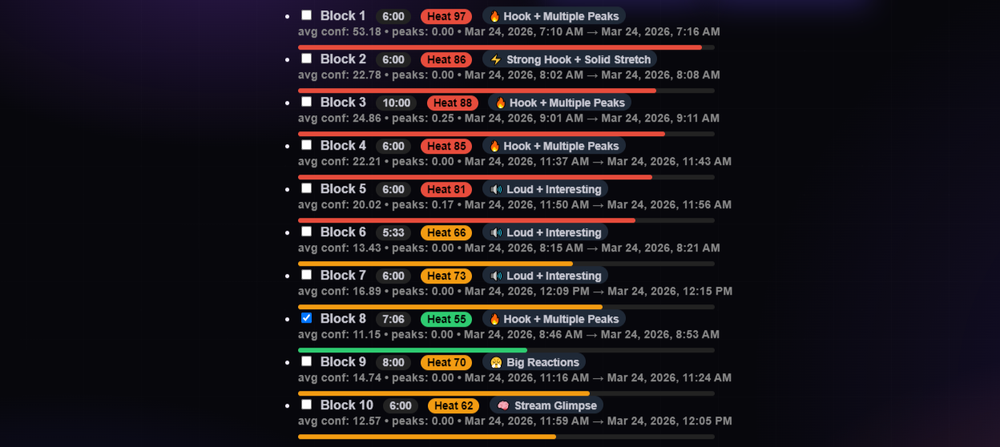
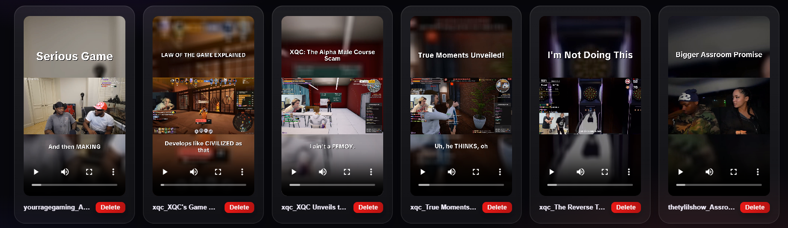

Two distinct engines. One automated library.
Cliprr operates on two separate tracks depending on your content goals: a reactive engine for live short-form clips, and an analytical engine for long-form VOD breakdowns.
The Live Shortform Pipeline
Built for 30-second Twitch clips. Driven by live stream metrics and optimized by a continuous learning loop.
Set live detection thresholds.
Cliprr monitors the active stream. You control what triggers a 30-second clip by setting specific confidence thresholds and streamer cooldowns.

Optimize through learning.
The system doesn't guess. It tracks which generated titles and clips perform best on YouTube, surfacing suggested rule changes for your approval to improve the next live run.

The VOD Longform Pipeline
Built for archiving and long-form content extraction. Drop in a link and let the analytical engine map the entire broadcast.
Map the hype blocks.
Paste a VOD URL or local MP4. Cliprr analyzes the entire timeline, visualizing chat density and audio intensity to isolate the highest-confidence blocks.

Extract longform segments.
Select the mapped blocks that matter. The engine cuts and processes the longer segments, bypassing manual scrubbing entirely.

Output that fits the format.
Live short-form clips route directly to your built-in Cliprr library for easy review and management, while your heavy, long-form VOD segments export straight to your local drives ready for your editor. Everything ends up exactly where it needs to be.
